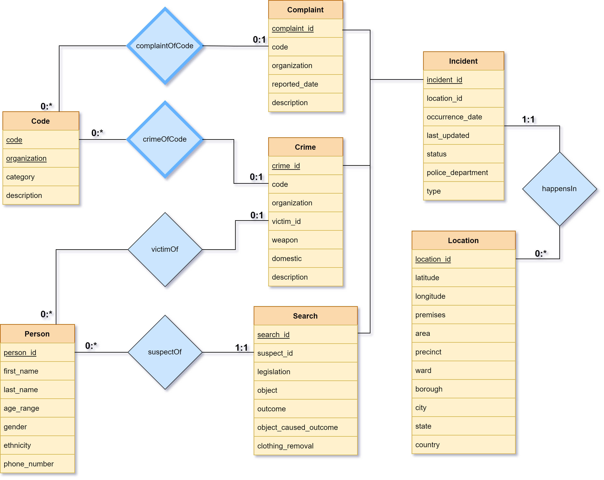
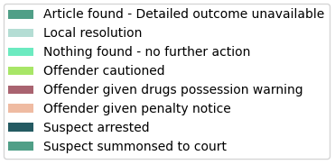

ECE 356 • Crime Statistics Database Project
SELECT Student, Course, Term, InstitutionFROM WaterlooStudentsViewORDER BY Student ASC;| Student | Course | Term | Institution |
|---|---|---|---|
| Kyle Pinto | ECE 356 - Database Systems | Fall 2021 | University of Waterloo |
| Puranjoy Saha | ECE 356 - Database Systems | Fall 2021 | University of Waterloo |
| Zahin Zaman | ECE 356 - Database Systems | Fall 2021 | University of Waterloo |
Table of Contents
IntroductionOverviewDatasetsLondon Police RecordsNYPD Complaint Data HistoricCrimes in ChicagoLA CrimesDesignAnalysis of DatasetsDesign OptionsUK & US Data Separation OptionCrimes, Complaints & Stop-and-Searches OptionCrimes Only OptionDecision MatrixEntity-Relationship ModelLocationCodePersonIncidentComplaintCrimeSearchRelational SchemaTablesForeign Key ConstraintsIndexesViewsClient ApplicationOverviewInstallationConfigurationUsage BreakdownIdeal command line toolHigh level CommandsDatabase CreationSubcommandsWalkthroughBackground checkAdding a crime to the databaseFilter for crimes at a specific locationTesting PlanData MiningGoalFeature SelectionTechniqueImplementationResultsAge RangeLegislationObjectGenderEthnicityConclusionChallengesTradeoffsFuture Improvements
Introduction
Overview
This project involves the collection of crime records datasets from law enforcement departments in UK and US, and the process of developing an optimally designed database and a client interface for the definition, manipulation and storage of this data. The links to the source code and the video presentation for this project are listed below:
Datasets
Datasets used in this project have been collected from Kaggle. Each dataset provides crime data from a different city and state in UK or US.
| Name | Location | Link |
|---|---|---|
| London Police Records | London, England, UK | [↗] |
| NYPD Complaint Data Historic | New York City, New York, US | [↗] |
| Crimes in Chicago | Chicago, Illinois, US | [↗] |
| LA Crime Data | Los Angeles, California, US | [↗] |
London Police Records
This dataset includes crime data from London from late 2014 to mid 2017, held in the following three CSV files:
london-outcomes.csvlondon-street.csvlondon-stop-and-search.csv
london-outcomes.csv and london-street.csv hold data on instances of crime committed in London and their relevant information. london-stop-and-search.csv holds data on "stop-and-searches" conducted by London police and their relevant information.
The data references the location of each incident by the Lower Layer Super Output Area (LSOA) code of the neighborhood, which can be mapped to specific area names using the Lookup Table of UK Local Government Areas dataset.
NYPD Complaint Data Historic
This dataset includes records of complaints of incidents reported to the New York City Police Department (NYPD) from 2006 to the end of 2017, in CSV file NYPD_Complaint_Data_Historic.csv. The data contained in this file also includes the NYPD crime code corresponding to each complaint, which is unique to a specific type of crime.
Crimes in Chicago
This dataset includes crimes reported and committed from the records of the Chicago Police Department (CPD) between 2001 and 2017, divided into four CSV files:
Chicago_Crimes_2001_to_2004.csvChicago_Crimes_2005_to_2007.csvChicago_Crimes_2008_to_2011.csvChicago_Crimes_2012_to_2017.csv
The columns of this dataset includes the Illinois Uniform Crime Reporting (IUCR) code corresponding to the committed crime, which can be extracted from the IUCR dataset hosted on the City of Chicago website.
LA Crimes
This dataset includes crimes reported and committed from the records of the Los Angeles Police Department (LAPD) between 2010 and mid-2021, divided into two CSV files:
Crime_Data_from_2010_to_2019.csvCrime_Data_from_2020_to_Present.csv
The columns of this dataset includes the LAPD crime code corresponding to the committed crime, which is based on the FBI Uniform Crime Reporting codes. These codes can be compiled from the FBI UCR Handbook.
Design
Analysis of Datasets
The first step of the design process is a thorough investigation of the given datasets and their attributes in order to prepare practical options for merging the datasets. By examining each dataset, we discover the following:
- Every dataset entry has a location associated with it. Usually that location is specified by latitude and longitude coordinates, along with a few other address parameters that depend on the area, such as ward, precinct, LSOA code, borough, city, state, country, etc. These address parameters, however, vary significantly between UK and US datasets.
- Every dataset entry also has a few attributes that are common between all or most of the datasets. These attributes include date of occurrence, type of crime, description of crime, and other similar attributes that describe a general incident.
- Every US dataset entry has a unique crime code defined that describes the category of the crime. The uniqueness of these codes also depend on the organization that reports this crime data. For instance, NYPD and IUCR crime codes are not identical.
- Some datasets include victim information, and some do not. Because information related to individual people may lead to privacy issues, the datasets omit personal information such as names, contact numbers etc. and only store their ages (or age ranges), genders and ethnicities.
- The
london-stop-and-searches.csvfile from the London Police Records dataset contains information that is slightly different from the rest of the datasets. It includes information about stop-and-searches conducted by London police, which may or may not have resulted in the discovery of criminal activity. While there are common attributes between this and other datasets, such as location and date, the context of this information is different.
Design Options
From the analysis of the datasets, the most obvious design options we can draw are the definitions of separate entities for crime codes and for individual people.
Each crime code entry should be unique depending on the code and the organization that reports that crime data. Each code should also have a category definition and a description of the crime.
Individual people can also be considered a separate entity. A person could be described as the victim of a crime, the perpetuator of a crime, or the suspect of a stop-and-search. An issue that can be identified here is that the datasets have omitted personal information to avoid privacy issues, which includes information that is typically present in a police department database. Thus, for the sake of completeness, it may make sense to generate fake names and phone numbers to go with the rest of the information about individual people.
The rest of the information from the datasets mostly consist of partially overlapping attributes, which necessitates the exploration of the differences between the datasets and the design choices to accommodate these differences.
UK & US Data Separation Option
There is a significant difference between location-based attributes of the UK and US datasets. UK addresses use attributes such as LSOA codes and regions for location which usually is not relevant for US addresses, and US addresses use attributes such as precinct, ward, distrinct and state for location, which is irrelevant for UK addresses.
Additionally, UK datasets do not report any crime codes that correspond to the crimes. This is only relevant to crimes in US.
Considering these points, we can outline the separation of UK and US datasets into individual UK and US based addresses and crimes as a practical design option.
Crimes, Complaints & Stop-and-Searches Option
Another practical design option is to divide the datasets into three separate entities: complaints, which would include information from the NYPD Complaints Data Historic dataset, stop-and-searches, which would include information from the london-stop-and-searches.csv file of the London Police Records dataset, and crimes, which would include crime data from all other datasets.
This design option considers the different entities that the datasets provide and try to minimize the number of irrelevant attributes, while also providing a generalized division between the dataset attributes.
Crimes Only Option
In order to avoid making the entities of the database too specific, we can also consider further generalizing all the information from all the datasets into a single entity. The advantage of this option is avoidance of over-specialization, but has a possible disadvantage of too many irrelevant attributes caused by over-generalization.
Decision Matrix
We can consider our outlined options and construct a weighted decision matrix to decide between our design choices. We will weigh our alternatives in terms of the following criteria:
- Generalization: database should be a good generalization of the combined datasets
- Simplicity: entities and relationships within the database should not be too complex
- Minimized Data Loss: loss of data due to merging should be reduced
- Attribute Relevance: attributes within the entities should be relevant for most of the database entries
- Accommodation of Needs: database should perform operations based on the users' (i.e. police station employees) needs
| Generalization | Simplicity | Minimized Data Loss | Attribute Relevance | Accommodation of needs | Score | |
|---|---|---|---|---|---|---|
| Weights | 2 | 1 | 3 | 4 | 5 | |
| UK & US Data Separation | 1 | 1 | 4 | 5 | 2 | 45 |
| Crimes, Complaints & Stop-and-Searches | 3 | 4 | 3 | 4 | 5 | 60 |
| Crimes Only | 5 | 5 | 4 | 1 | 3 | 46 |
By analyzing our decision options using a decision matrix, we can conclude that separating crimes, complaints and stop-and-searches while merging the UK and US datasets is the most optimal solution given the context of our project.
Entity-Relationship Model
We can now build an entity-relationship model based on our selected design options.

Location
The Location entity is a combination of all the location-based attributes from all datasets. This includes attributes that are common between UK and US datasets, such as latitude, longitude, premises, city and country, as well other attributes that are only unique to either UK or US, such as area, precinct, ward, borough, and state. Note that LSOA code was omitted from this entity since it was uniquely functionally dependent on borough, and not particularly relevant if we already have the name of the borough.
The primary key for this entity is an artificial primary key, location_id.
| Attribute | Description |
|---|---|
location_id | Artificial primary key |
latitude | Latitude coordinate where the incident took place |
latitude | Longitude coordinate where the incident took place |
premises | Contextual premises of the incident |
area | Area where the incident took place |
precinct | Police precinct where the incident was reported |
ward | Ward where the incident took place |
borough | Borough where the incident took place |
city | City where the incident took place |
state | State/province where the incident took place |
country | Country where the incident took place |
Code
The Code entity contains all the different US crime codes as reported by the NYPD, IUCR and the LAPD, along with additional information regarding the codes, including category and description.
Since the uniqueness of the entries of this entity is dependent on both the crime code and the reporting organization, the primary key for this entity is a composite key made up of attributes code and organization.
| Attribute | Description |
|---|---|
code | Crime code |
organization | Reporting organization |
category | Category of crime code |
description | Description of crime code |
Person
The Person entity holds information about individual people that are relevant to the database (including information that may have to be auto-generated, such as first_name, last_name and phone_number).
The primary key for this entity is an artificial primary key, person_id.
| Attribute | Description |
|---|---|
person_id | Artificial primary key |
first_name | First name of person |
last_name | Last name of person |
age_range | Age range of person |
gender | Gender of person |
ethnicity | Ethnicity of person |
phone_number | Phone number of person |
Incident
The Incident entity represents an incident reported in any of the datasets and is meant to hold general information that is relevant to all specific incidents. This includes attributes occurrence_date, type, status, police_department and last_updated.
This entity also contains a location_id attribute which is related to the Location entity through relation happensIn. Ideally, this is a many-to-one relation between Incident and Location (i.e. multiple incidents can happen in the same location).
The primary key for this entity is an artificial primary key, incident_id.
| Attribute | Description |
|---|---|
incident_id | Artificial primary key |
location_id | Primary key of Location entity describing location of the incident |
occurrence_date | Date of occurrence of incident |
last_updated | Date when this record was last updated |
status | Current status of the incident |
police_department | Police department the incident was reported to |
type | Type of crime |
Complaint
The Complaint entity is a specialization of the Incident entity and provides additional information about incidents that are complaints about crimes, through attributes such as reported_date and description.
The code and organization attributes of the Complaint entity are related to the Code entity that describes the specific crime code referenced by the complaint, through the relation complaintOfCode.
📜 Note This is defined as a weak entity set because a complaint about a crime cannot be valid if there exists no criminal law (i.e. crime code) that prohibits that action.
The primary key for this entity is an artificial primary key, complaint_id.
| Attribute | Description |
|---|---|
complaint_id | Artificial primary key |
code | Crime code |
organization | Reporting organization |
reported_date | Date of complaint report |
description | Description of complaint |
Crime
The Crime entity is a specialization of the Incident entity and provides additional information about incidents that are reported crimes, through atttributes such as weapon, domestic and description.
Like those of the Complaint entity, the code and organization attributes of the Crime entity are related to the Code entity that describes specific crime code of the crime that's reportedly committed, through the relation crimeOfCode. Note that, once again, this is a weak entity set.
The victim_id attribute is related to the Person entity and describes the information related to the victim of the crime, through relation victimOf.
The primary key for this entity is an artificial primary key, crime_id.
| Attribute | Description |
|---|---|
crime_id | Artificial primary key |
code | Crime code |
organization | Reporting organization |
victim_id | Primary key of Person entity victim to crime |
weapon | Weapon used |
domestic | Indicates whether the crime was domestic |
description | Description of the crime committed |
Search
The Search entity is a specialization of the Incident entity and provides additional information about incidents that are stop-and-searches conducted by the police, through attributes such as legislation, object, outcome, object_caused_outcome and clothing_removal.
The suspect_id attribute of the Search entity is related to the Person entity and describes the information related to the suspect of the stop-and-search, through relation suspectOf.
The primary key for this entity is an artificial primary key, search_id.
| Attribute | Description |
|---|---|
search_id | Artificial primary key |
victim_id | Primary key of Person entity suspect to search |
legislation | Legislation under which search was conducted |
object | Object of search |
outcome | Outcome of search |
object_caused_outcome | Indicates whether outcome was a result of search object |
clothing_removal | Indicates whether clothing of suspect was removed for search |
Relational Schema
Tables
Now we can convert our entity-relationship model to relational schema. We can start by constructing the CREATE TABLE commands for our required tables.
xxxxxxxxxxCREATE TABLE Incident ( incident_id INT NOT NULL AUTO_INCREMENT, location_id INT, occurrence_date DATE, last_updated DATE, status VARCHAR(128), police_department VARCHAR(256), type VARCHAR(128), PRIMARY KEY(incident_id));xxxxxxxxxxCREATE TABLE Location ( location_id INT NOT NULL AUTO_INCREMENT, latitude DECIMAL(11, 8), longitude DECIMAL(11, 8), premises VARCHAR(128), area VARCHAR(256), precinct DECIMAL(4), ward DECIMAL(3), borough VARCHAR(64), city VARCHAR(64), state VARCHAR(64), country VARCHAR(64), PRIMARY KEY(location_id));xxxxxxxxxxCREATE TABLE Crime ( crime_id INT NOT NULL AUTO_INCREMENT, incident_id INT, code VARCHAR(4), organization VARCHAR(16), victim_id INT, weapon VARCHAR(256), domestic BOOL, description VARCHAR(256), PRIMARY KEY(crime_id));xxxxxxxxxxCREATE TABLE Complaint ( complaint_id INT NOT NULL AUTO_INCREMENT, incident_id INT, code VARCHAR(4), organization VARCHAR(16), reported_date DATE, description VARCHAR(256), PRIMARY KEY(complaint_id));xxxxxxxxxxCREATE TABLE Search ( search_id INT NOT NULL AUTO_INCREMENT, incident_id INT, suspect_id INT, legislation VARCHAR(256), object VARCHAR(256), outcome VARCHAR(256), object_caused_outcome BOOL, clothing_removal BOOL, PRIMARY KEY(search_id));xxxxxxxxxxCREATE TABLE Person ( person_id INT NOT NULL AUTO_INCREMENT, first_name VARCHAR(64), last_name VARCHAR(64), age_range VARCHAR(16), gender VARCHAR(16), ethnicity VARCHAR(64), phone_number VARCHAR(16), PRIMARY KEY(person_id));xxxxxxxxxxCREATE TABLE Code ( code VARCHAR(4) NOT NULL, organization VARCHAR(16) NOT NULL, category VARCHAR(256), description VARCHAR(256), PRIMARY KEY(code, organization));📜 Note A difference between the entity-relationship model and our defined tables is that the
Crime,ComplaintandSearchtables now have an additional attribute,incident_idwhich was not reflected on the entity-relationship model. This is because the relationship betweenCrime,ComplaintandSearchare specializations ofIncident, and so must be related using a foreign key attribute, i.e.incident_id.
Our relational schema is almost nearly similar to our entity-relationship model. We set the AUTO_INCREMENT option for all our artificial primary keys so that they are sequentially incremented automatically on insertion.
Foreign Key Constraints
Now we can define our foreign key constraints.
xxxxxxxxxxALTER TABLE Complaint ADD CONSTRAINT Complaint_Incident FOREIGN KEY (incident_id) REFERENCES Incident(incident_id);xxxxxxxxxxALTER TABLE Crime ADD CONSTRAINT Crime_Incident FOREIGN KEY (incident_id) REFERENCES Incident(incident_id);xxxxxxxxxxALTER TABLE Search ADD CONSTRAINT Search_Incident FOREIGN KEY (incident_id) REFERENCES Incident(incident_id);xxxxxxxxxxALTER TABLE Incident ADD CONSTRAINT happensIn FOREIGN KEY (location_id) REFERENCES Location(location_id);xxxxxxxxxxALTER TABLE Complaint ADD CONSTRAINT complaintOfCode FOREIGN KEY (code, organization) REFERENCES Code(code, organization);xxxxxxxxxxALTER TABLE Crime ADD CONSTRAINT crimeOfCode FOREIGN KEY (code, organization) REFERENCES Code(code, organization);xxxxxxxxxxALTER TABLE Crime ADD CONSTRAINT victimOf FOREIGN KEY (victim_id) REFERENCES Person(person_id);xxxxxxxxxxALTER TABLE Search ADD CONSTRAINT suspectOf FOREIGN KEY (suspect_id) REFERENCES Person(person_id);Indexes
Based on our primary and foreign keys, we can also set up appropriate indexes in order to improve the performance of our database.
xxxxxxxxxxCREATE INDEX Incident_PK_IDXON Incident (incident_id);xxxxxxxxxxCREATE INDEX Incident_Location_FK_IDXON Incident (location_id);xxxxxxxxxxCREATE INDEX Location_PK_IDXON Location (location_id);xxxxxxxxxxCREATE INDEX Crime_PK_IDXON Crime (crime_id);xxxxxxxxxxCREATE INDEX Crime_Incident_FK_IDXON Crime (incident_id);xxxxxxxxxxCREATE INDEX Crime_Code_FK_IDXON Crime ( code, organization);xxxxxxxxxxCREATE INDEX Crime_Person_FK_IDXON Crime (victim_id);xxxxxxxxxxCREATE INDEX Complaint_PK_IDXON Complaint (complaint_id);xxxxxxxxxxCREATE INDEX Complaint_Incident_FK_IDXON Complaint (incident_id);xxxxxxxxxxCREATE INDEX Complaint_Code_FK_IDXON Complaint ( code, organization);xxxxxxxxxxCREATE INDEX Search_PK_IDXON Search (search_id);xxxxxxxxxxCREATE INDEX Search_Incident_FK_IDXON Search (incident_id);xxxxxxxxxxCREATE INDEX Search_Person_FK_IDXON Search (suspect_id);xxxxxxxxxxCREATE INDEX Person_PK_IDXON Person (person_id);xxxxxxxxxxCREATE INDEX Code_PK_IDXON Code ( code, organization);Views
Finally, we can also create database views based on joins that can provide information that go together. This is to help make it easier to query for information from the client application. We create the following views (the SQL code for creation of views is omitted here due to length):
| View Name | View Description |
|---|---|
CrimeView | Atributes from a join between Crime, Incident, Location, Code and Person (victim_id) |
ComplaintView | Atributes from a join between Complaint, Incident, Location and Code |
SearchView | Atributes from a join between Search, Incident, Location, and Person (suspect_id) |
Client Application
Overview
The client application serves as a front end for the database. It uses an interactive command line interface to maintain and look up records, as well as create, delete, and populate the database.
Installation
Clone the repository:
xxxxxxxxxxgit clone https://github.com/alvii147/CrimeStatsAnalysis.gitNavigate into repository directory:
xxxxxxxxxxcd CrimeStatsAnalysis/Create and activate Python virtual environment (optional):
xxxxxxxxxxpython3 -m venv env# Linux & MacOSsource env/bin/activate# Windowssource env/Scripts/activateInstall dependencies:
xxxxxxxxxxpip3 install -r requirements.txtConfiguration
In order to run the program, you will need access to a database on Marmoset. For best results, use a emtpy database. You can store the database credentials in a configuration data file under src/MySQLutils/config.ini.
📜 Note Using
config.iniis not required but is recommended. If you choose to not use the configuration file, then the client application will prompt you for your credentials each time it connects to the database.
To store your credentials in a config.ini file:
xxxxxxxxxxecho [mysqlconfig] > src/MySQLutils/config.iniecho host = <hostname> >> src/MySQLutils/config.iniecho user = <username> >> src/MySQLutils/config.iniecho password = <password> >> src/MySQLutils/config.iniecho database = <databasename> >> src/MySQLutils/config.ini<hostname> is the hostname of the database, e.g. marmoset04.shoshin.uwaterloo.ca.
<username> and <password> are your MySQL username and password.
<databasename> is the name of your database on the server.
The file should look like this:
xxxxxxxxxx[mysqlconfig]host = marmoset04.shoshin.uwaterloo.causer = waterlooidpassword = mylittleponydatabase = db356_waterlooidUsage Breakdown
The client supports a variety of commands which can be broken down into multiple categories.
Once the environment is configured, you can run the client application crime.py. First navigate to the source directory:
xxxxxxxxxxcd src/Once inside src, you can run the client application as follows:
xxxxxxxxxxpython3 crime.pyThis should display a list of the top-level commands. Please refer to the following sections for more information about how to use to client.
Ideal command line tool
Ideal list of features we want implemented:
- Add information to the database
- Update information from the database
- Delete information from the database
- Run a background check on someone
- Able to query data based on location, code, and time
- Allow the ability for the user to specify certain flags for information rather than prompting question
- Allow functionality to sort data in ascending or descending order
- Incorporate flags that allow user to use the “group by” feature in SQL
- Command that allow you to gather statistics on the data ex(what fraction of suspects are found guility in a given region for a particular type of crime)
The features we did not get to implement are: 6, 7, 8 and 9
For us the focus was really on ensuring that the core functionalities of a command line tool were available in the database. This included being able to add, update, delete and query data from the database. As we implemented the client, we had to decide regarding the ease of use of the application. While we do see that the ideal client application would have both flags (ex. Put -d to modify the date) and prompt the user for questions, we ended up implementing the prompting of information. This is because when it comes to our use cases a variety of different people would use the client such as law enforcement and government officials. So, ease of use was more important than the flexibility.
The additional features of being able to implement commands that allow you to group and sort data would be very beneficial. Especially from the standpoint of understanding the criminal activity better in a particular region. This can help bring to light many of the crimes taking place in the community and can maybe help you see what attributes or factors contribute to such crimes.
High level Commands
The client can be categorized as two sets of commands. The first are the high levels commands that allow you to do the following:
- adding information
- updating information
- deleting information
- showing / querying the database
To see the high level commands in the client type in the following :
xxxxxxxxxxpython3 crime.py helpThe following are some of the high level commands availble in the client application. This can be seen from the command above.
| Command | Description |
|---|---|
help | Show this message |
create | Create all tables |
load | Load data from CSVs into tables |
clear | Delete all entries in tables |
clean | Drop all tables from database |
add | Add entries to the database |
delete | Delete entries from the database |
update | Update entries in the database |
background | Run background check on person |
show | Show detailed record information |
filter | Filter records based on location, date, and code |
Example of running one of these commands in the terminal :
xxxxxxxxxxpython3 crime.py addDatabase Creation
Once the repository is configured, you can use the client to create the database. The client cannot interact with the database until is it created.
Start by creating the database tables, foreign keys, and views:
xxxxxxxxxxpython3 crime.py createOnce the tables are created, load the data from the CSVs. This may take some time depending on the server load and how many records are being loaded:
xxxxxxxxxxpython3 crime.py loadAt this point, the database should be fully created and loaded with preliminary data from the CSVs. Note that some supplementary data is obtained from additional CSVs which are located under src/codes. These contain the crime codes for various crimes that are found in the database.
If you would like to delete all entries from the database tables, use the following clear command. This will not drop the tables from the database:
xxxxxxxxxxpython3 crime.py clearAlteratively, if you would like to remove all the tables from the database, use the clean command. This will drop the tables along with their entries, and is useful when you would like to rebuild the database from scratch or if you would like to reload the records from the CSVs:
xxxxxxxxxxpython3 crime.py cleanSubcommands
create, load, clear, and clean are used for database creation and deletion only and do not have subcommands. The commands for the client can be further broken down to allow the user greater control over the database. For example the add command allows you to specify which tables you want to add the data to.
📜 Note: In the event that the client encounters an error, any modifications to the database will not be commited. The database will only be updated in the event of a successful command run.
To see all the specific commands type the command followed by help :
xxxxxxxxxxpython3 crime.py add helpThe following commands allow you to modify or query the information in the database. When the specific command is run the user will be prompted for a set of attributes through questions. The user can choose to set these attributes or leave them blank.
python3 crime.py add help
| Command | Description |
|---|---|
add code | Add a crime code from a crime enforcement organization |
add location | Add a location of a complaint, crime, or search |
add person | Add a suspect or victim |
add complaint | Add a complaint that was made to the police |
add crime | Add a crimes that has taken place |
add search | Add a suspect search record |
add help | Show this message |
python3 crime.py delete help
| Command | Description |
|---|---|
delete code <code> <organization> | Delete a code from a crime enforcement organization |
delete location <location_id> | Delete a location |
delete person <person_id> | Delete a person |
delete complaint <complaint_id> | Delete a police complaint record |
delete crime <crime_id> | Delete a crime record |
delete search <search_id> | Delete a suspect search record |
delete help | Show this message |
python3 crime.py update help
| Command | Description |
|---|---|
update code <code> <organization> | Update information about a crime code |
update location <location_id> | Update location details |
update person <person_id> | Update information about a person |
update complaint <complaint_id> | Update details of a police complaint |
update crime <crime_id> | Update details of a crime record |
update search <search_id> | Update details of a suspect search |
update help | Show this message |
python3 crime.py background help
| Command | Description |
|---|---|
background id | Run background check based on person ID |
background name | Run background check based on first and last names |
python3 crime.py show help
| Command | Description |
|---|---|
show code | Show information about an organization's crime code |
show person <person_id> | Show information about a person |
show location <location_id> | Show information about a location |
show complaint <complaint_id> | Show information about a complaint |
show search <search_id> | Show information about a search |
show crime <crime_id> | Show information about a crime |
show help | Show this message |
python3 crime.py filter help
| Command | Description |
|---|---|
filter complaint | Filter complaint by location, date, and code |
filter crime | Filter crimes by location, date, and code |
filter search | Filter search by location, date, and code |
filter help | Show this message |
Walkthrough
Lets run through a few commands to get a better idea of how the command line tool works.
Background check
For the background check you can specify by which factors you want to lookup the person by:
xxxxxxxxxxpython3 crime.py backgroundx$ python3 crime.py background> Search for person by:> [1] ID> [2] First & Last Names> [3] <quit>
Enter selection: 1Enter ID: 1> Search returned 1 results> Select person to run a background check on> [1] Bob Jones> [2] <quit>
Enter selection: 1
> ---------------------------------------------------------> Person information for Bob Jones:> ---------------------------------------------------------> person_id: 1> first_name: Bob> last_name: Jones> age_range: 56-57> gender: Male> ethnicity: White> phone_number: (416) 456-2836> ---------------------------------------------------------
> ---------------------------------------------------------> Bob Jones was a victim of the following crimes:> ---------------------------------------------------------> crime_id: 1898> incident_id: 2098> occurrence_date: 2017-01-01> code: 110> organization: IUCR> category: HOMICIDE> code_description: FIRST DEGREE MURDER> type: sometupe> status: something> police_department: Chicago Police Department> weapon: Knife> domestic: 1> description: Victim was attacked by a dangerous gang> location_id: 1> latitude: 51.45327300> longitude: -0.00089000> premises: None> area: None> precinct: None> ward: None> borough: None> city: Chicago> state: None> country: United States> victim_id: 1> victim_first_name: Bob> victim_last_name: Jones> victim_age_range: 56-57> victim_gender: Male> victim_ethnicity: White> victim_phone_number: (416) 456-2836> ---------------------------------------------------------> crime_id: 1899> incident_id: 2099> occurrence_date: 2009-09-09> code: 420> organization: NYPD> category: Drugs> code_description: Intoxication> type: None> status: None> police_department: None> weapon: None> domestic: None> description: Victim was drugged> location_id: 1> latitude: 51.45327300> longitude: -0.00089000> premises: None> area: None> precinct: None> ward: None> borough: None> city: New York> state: None> country: United States> victim_id: 1> victim_first_name: Bob> victim_last_name: Jones> victim_age_range: 56-57> victim_gender: Male> victim_ethnicity: White> victim_phone_number: (416) 456-2836> ---------------------------------------------------------> crime_id: 1900> incident_id: 2100> occurrence_date: 2003-05-21> code: 114> organization: NYPD> category: ARSON> code_description: None> type: None> status: Under Investigation> police_department: New York Police Department> weapon: Flamethrower> domestic: 0> description: Suspect torched victim's car with a flamethrower> location_id: 5> latitude: 51.47168500> longitude: -0.13594000> premises: None> area: None> precinct: None> ward: None> borough: None> city: New York> state: None> country: United States> victim_id: 1> victim_first_name: Bob> victim_last_name: Jones> victim_age_range: 56-57> victim_gender: Male> victim_ethnicity: White> victim_phone_number: (416) 456-2836> ---------------------------------------------------------> crime_id: 1901> incident_id: 2101> occurrence_date: 2003-05-21> code: 101> organization: City of London Police> category: ASSUALT> code_description: None> type: None> status: Case Resolved> police_department: City of London Police> weapon: Handgun> domestic: 0> description: Victim was shot by suspect using a handgun> location_id: 5> latitude: 51.47168500> longitude: -0.13594000> premises: None> area: None> precinct: None> ward: None> borough: None> city: London> state: None> country: United Kingdom> victim_id: 1> victim_first_name: Bob> victim_last_name: Jones> victim_age_range: 56-57> victim_gender: Male> victim_ethnicity: White> victim_phone_number: (416) 456-2836> ---------------------------------------------------------
> ---------------------------------------------------------> Bob Jones was searched as a suspect of the following crimes:> ---------------------------------------------------------> No stop & search records foundThe background check can also be run with the id or name flags that allow you to search for a person based on id or name:
xxxxxxxxxxpython3 crime.py background idpython3 crime.py background nameAdding a crime to the database
xxxxxxxxxx$ python3 crime.py add crime> Do you know the ID of the victim?[yes/no]: yes[INT(10)] victim_id: 1> Do you know the code and organization for this crime?[yes/no]: yes[VARCHAR(4)] code: 101[VARCHAR(16)] organization: NYPD> Do you know the location ID for this incident?[yes/no]: yes[INT(10)] location_id: 5> Incident:[DATE] occurrence_date: 03/05/21[DATE] last_updated: 03/07/21[VARCHAR(128)] status: Under Investigation[VARCHAR(256)] police_department: New York Police Department[VARCHAR(128)] type:> Crime:[VARCHAR(256)] weapon: Handgun[TINYINT(3)] domestic: 0[VARCHAR(256)] description: Victim was shot by suspect using a handgun~ Added crime '1901' to database📜 Note When adding a crime, the client with prompt you for the necessary information. If you don't know the information for a particular attribute, type [Enter] to skip it. This will insert a
NULLfor that field.
Using the SQL SELECT command, we can confirm that the crime record was successfully added to the database:
xxxxxxxxxxmysql> SELECT crime_id, weapon, description FROM Crime WHERE crime_id = 1901;+----------+---------+--------------------------------------------+| crime_id | weapon | description |+----------+---------+--------------------------------------------+| 1901 | Handgun | Victim was shot by suspect using a handgun |+----------+---------+--------------------------------------------+1 row in set (0.00 sec)If you do not know some information that is mandatory, the command will abort, and you will be asked to separately add the corresponding records. For example, you cannot add a crime with a crime code and organization that does not yet exist in the database. In this case you will need to add a new crime code using the python3 crime.py add code command:
xxxxxxxxxx$ python3 crime.py add crime> Do you know the ID of the victim?[yes/no]: yes[INT(10)] victim_id: 2> Do you know the code and organization for this crime?[yes/no]: no> Please add a new code using 'python3 crime.py add code'In other cases, the client will verify that your data is valid. For example, it will reject crime codes that do not exist in the database:
xxxxxxxxxx> Do you know the ID of the victim?[yes/no]: yes[INT(10)] victim_id: 3> Do you know the code and organization for this crime?[yes/no]: yes[VARCHAR(4)] code: 1000[VARCHAR(16)] organization: LAPDX 'LAPD' code '1000' not found!> Please add a new code using 'python3 crime.py add code'Filter for crimes at a specific location
The filter command prompts for mutiple sections that you can narrow your search by which include the following:
- Location
- Crime codes
- Date
You can specify one or mutiple of these in the same filter query. The client will show you the most important imformation from the results. You can use the resulting codes and the python3 crime.py show command to learn more about these records based on their IDs.
Let's say that you wanted to know the crimes that took place in Los Angeles after 2020 and reported by the LAPD in the Vehicle stolen category.
xxxxxxxxxxpython3 crime.py filter> Do you want to filter by location?[yes/no]: yes> Do have a country you want to filter by?[yes/no]: no> Do have a city you want to filter by?[yes/no]: yes[VARCHAR(64)] city: Los Angeles> Do have a state you want to filter by?[yes/no]: no> Do have a borough you want to filter by?[yes/no]: no> Do you want to filter by code?[yes/no]: yes> Do you know the crime code?[yes/no]: yes[VARCHAR(4)] code: 510> Do you know the name of the crime enforcement organization?[yes/no]: yes[VARCHAR(16)] organization: LAPD> Do you want to filter by date?[yes/no]: yes> [1] Filter by exact date> [2] Filter by date rangeEnter selection: 2> Do have a max date you want to filter by?[yes/no]: no> Do have a min date you want to filter by?[yes/no]: yes[DATE] occurrence_date: 01/09/20A few rows of the command output (some columns have been truncated for readability):
xxxxxxxxxx| --------------- | ---- | ----------- | ----------------- | ---------------- || occurrence_date | code | city | victim_first_name | victim_last_name || --------------- | ---- | ----------- | ----------------- | ---------------- || 2019-11-15 | 510 | Los Angeles | Mary | Anzalone || 2019-12-11 | 510 | Los Angeles | Carl | Townsend || 2019-10-15 | 510 | Los Angeles | Virgil | Thissen || --------------- | ---- | ----------- | ----------------- | ---------------- |💡 Tip If you want to look up a particular code to verify its entries before filtering by code, use the
show codecommand as shown below.
xxxxxxxxxx$ python3 crime.py show code> Do you know the crime code?[yes/no]: yes[VARCHAR(4)] code: 510> Do you know the name of the crime enforcement organization?[yes/no]: yes[VARCHAR(16)] organization: LAPD
| Code | Organization | Category | Description || ---- | ------------ | -------- | ---------------- || 510 | LAPD | NULL | VEHICLE - STOLEN |Testing Plan
In order to test our client and database functionality, we made use of both manaul and automatic testing methods. We individually tested each client command and verified the corresponding functionality using MySQL commands on the database. For example, the add and delete commands were manually verified by crosschecking for deletions and addtions vias SQL SELECT queries from the same tables, both before and after running the commands. Similar testing was conducted for update. These three commands make up the DDL and DML.
The remaining commands deal with querying only and not the SQL DDL/DML language such as INSERT, DELETE, and UPDATE. These include the update, show, filter, and background commands. These commands actually generate SQL SELECT queries in order to obtain the data, so it was easy to verify their output by constructing equivalent queries in the MySQL terminal.
In additional to manually testing our database functionality, we also developed automated test cases that accomplish the same goal. This test code runs various combinations of commands and subcommands and verifies the output by cross-referencing against the results that are directly queried from the database. The coverage for these unit tests are shown below:
xxxxxxxxxx$ coverage run tests.py -btest_add_filter_complaint (__main__.TestCLI) ... oktest_add_show_delete_crime (__main__.TestCLI) ... oktest_add_show_delete_person (__main__.TestCLI) ... oktest_background_check (__main__.TestCLI) ... oktest_isNull (__main__.TestUtils) ... oktest_isQuoted (__main__.TestUtils) ... oktest_stripQuotes (__main__.TestUtils) ... ok
----------------------------------------------------------------------Ran 7 tests in 1614.001s
OK
$ coverage reportName Stmts Miss Cover----------------------------------------------MySQLutils/MySQLutils.py 27 3 89%MySQLutils/__init__.py 1 0 100%crime.py 1252 815 35%db.py 97 18 81%log.py 19 3 84%person.py 38 3 92%tests.py 142 0 100%transfer.py 418 196 53%utils.py 101 7 93%----------------------------------------------TOTAL 2095 1045 50%Data Mining
The following sections detail the data mining investigation that we conducted on the crime dataset.
📜 Note The code for the data mining along with all defined helper functions can be found in
src/data_mining/. Note thatmatplotlibandscipywill need to be installed for running them
Goal
The goal of our data mining exercise was to answer to following question:
What factors influence the outcomes of stop-and-searches in the London area?
To evaluate this question, we made use of the data records found in london-stop-and-search.csv.
Feature Selection
In order to determine the factors that influence the outcome of a stop-and-seach, we start by computing a correlation metric between each of our features (i.e. attributes) and the outcome of each search. Because most of our attributes are non-numeric, a suitable correlation metric for this context would be the Spearman's Rank Correlation.
Technique
The first step of the computation of Spearman's Rank Correlation involves the sorting of the given two vectors to find the ranks of each observation in the vectors.
For example, if the values of the vectors are [12, 3, 15], the corresponding pairs would be [2, 3, 1].
Once we have obtained the ranks of both the vectors, the Spearman's Rank Correlation
where
Implementation
We can now use the SciPy library in Python to help compute the Spearman's Rank Correlation between the attributes and the outcome of the searches.
xxxxxxxxxximport warningsimport mathfrom scipy import stats
import utils
OMIT_ATTRIBUTES = [ 'type', 'occurrence_date', 'part_of_policing_operation', 'latitude', 'longitude', 'outcome', 'object_caused_outcome', 'clothing_removal',]
warnings.filterwarnings('ignore', category=RuntimeWarning)
if __name__ == '__main__': search_data = utils.read_csv(utils.SEARCH_DATA_FILE)
rho, pvalue = stats.spearmanr(search_data, axis=0)
outcome_idx = utils.SEARCH_DATA_ATTRIBUTES.index('outcome') outcome_correlation = [ [utils.SEARCH_DATA_ATTRIBUTES[i], rho[outcome_idx][i]] for i in range(len(utils.SEARCH_DATA_ATTRIBUTES)) ]
outcome_correlation = list(filter( lambda x: not math.isnan(x[1]) and x[0] not in OMIT_ATTRIBUTES, outcome_correlation, ))
outcome_correlation = list(reversed(sorted( outcome_correlation, key=lambda x: abs(x[1]), )))
print('{:20s} {:20s}'.format('Attribute', 'Correlation')) for corr in outcome_correlation: print('{:20s} {:20s}'.format(corr[0], str(corr[1])))This gives us the correlation between our attributes and the outcome:
xxxxxxxxxxAttribute Correlationage_range 0.09296395655124153legislation -0.016374289472876096object 0.01227489539072439gender 0.011708471018349945detailed_ethnicity -0.007534401717632491ethnicity 0.0013679657488576144
This shows us that the outcome depends the mostly on the age_range and the legislation, with object, gender and detailed_ethnicity following (we can ignore the ethnicity column since it is derived from detailed_ethnicity)
Results
The investigation produced results against suspect ethnicities and genders. The graphs show what percentage of people had each outcome, and the data is separated by gender and ethnicity.
Age Range

The age range results are grouped under the following five categories:
- Under 10
- 10-17
- 18-24
- 25-34
- Over 34
The major outcomes for this set of results are arrest, drug warnings, and no action taken. In general, suspects in the under 10 and 10-17 age group are more likely to be discharged without a warning compared to those over 18. This makes sense, as people in these age groups are classified as juveniles, and are therefore not evaluated in the same way as suspects who are legally adults, i.e., over 18. To complement this, the general trend is that younger suspects are less likely to be arrested, while more older offenders end up being arrested, which also makes sense.
Interestingly, a greater number of suspects aged 18 and above received drug warnings, whereas fewer suspects in the under 18 groups were given warnings. This makes sense, considering that those 18 and above were more likely to be arrested, implying that they actually were guilty of drugs possession. Statistically, we would expect more of the older suspects to either be arrested or given a warning. Most of the juvenile suspects were discharged without further action, meaning that it was unlikely that they where guilty and were therefore less likely to receive a warning in the first place.
An interesting point is that very few of the juveniles who were guilty actually ended up recieving a warning, with most of them being arrested right away. Albeit being a lesser percentage than older age groups, we would expect that the crime enforcement officers would be more likely to give juvenile offenders a warning instead of arresting them right away.
Legislation
The legislation of a stop and search is the legislation that grants an officer the power to perform a stop and search. Details of the legislations under examination are described below:
| Legislation | Description |
|---|---|
| Criminal Justice and Public Order Act 1994 (section 60) | A police officer of or above the rank of inspector may stop and search a person if they reasonably believe either that incidents involving serious violence may take place in any locality in his police area, and that it is expedient to give an authorisation under this section to prevent their occurrence, or that persons are carrying dangerous instruments or offensive weapons in any locality in his police area without good reason. |
| Misuse of Drugs Act 1971 (section 23) | Provides that a constable may search a person suspected of being in possession of a controlled drug and detain them for the purpose of the search. |
| Police and Criminal Evidence Act 1984 (section 1) | Provides police officers with the power to stop and search any person, vehicle, or anything which is in or on a vehicle, for stolen or prohibited articles, points and blades, or fireworks. |
| Criminal Justice Act 1988 (section 139B) | A constable may enter school premises and search those premises and any person on those premises for knives (specific details in the legislation) or any offensive weapon within the meaning of section 1 of the Prevention of Crime Act 1953. |
| Firearms Act 1968 (section 47) | If a constable has reasonable cause to suspect a person of having a firearm with him in a public place, or to be committing or about to commit, elsewhere than in a public place, an offence relevant for the purposes of this section, the constable may search that person and may detain him for the purpose of doing so. |
The bar graphs reveal that the outcome of a stop and search do vary slightly with legislation. First thing we notice is that there is a larger percentage of stop and search suspects that were given a drugs possession warning under the Misuse of Drugs Act 1971 than any other legislation. This makes sense because most of the stop and searches under this legislation will likely be related to drugs possession. We can also observe that the percentage of cases where the suspect was arrested after a stop and search under the Criminal Justice and Public Order Act 1994 is much lower than that of other legislations, likely due to this legislation being a general category and not being related to any specific type of crime. Thus, law enforcers are more likely to make incorrect judgement. Finally, we see that stop-and-searches under the Police and Criminal Evidence Act 1984 has a relatively large percentage of instances where a local resolution was reached. This is likely because these incidents involve victims, and hence there is a greater likelihood of them not pressing charges.
Object
When looking at the objects the suspects are serached for the results are quite interesting. One of the first things that we can see is that the most suspects are arrested for possesing fireworks when searched. This is quite interesting as we expected either drugs or firearms to result in a higher arrest rate. A likely reason for this is due to the volitile nature of fireworks. However it is important to note that the possession of fireworks results in minor offence compared to the harsher sentences that result from possessing firearms or drugs. Another surprise is the level of drug offences given off as warnings. That aspect is a bit hard to interpolate from the data as we dont know the quantity of the substance found. It is also important to note that these are the objects that are simply being searched by law enforcement. It doesn't necessarily mean that they will be found in the search. However we can see that when an object is found during a search it often does result in an arrest. This is further supported by the minimal level of warning that are given. We can see that during the search for an object the two outcomes of arrest or not finding the object seem to be the most likely.
Another interesting aspect is the varying levels of warnings given out based on the object being searched. It seems that drug possession are more likely to get a warning compared to many of the other objects. A big reason for this is due to the controlled nature or the drugs, meaning that it is often prescribed to patients.
It is also interesting to note the percentage of stop and search that dont result in an object being found. This is surprising considering we expected that a search often occurs if law enforcement has a good reason to believe that you are in possession of something illegal. However this does not seem to be the case and may bring into question the method used to determine when to conduct a stop and search.
Gender
We first analyze the difference between male and female suspects, due to the more or less similar results in both those categories. Among males and females, both are equally likely to be discharged without any further action, as well as given penalties and drug warnings. However, it appears that male suspects are slightly more likely to be arrested than female suspects. Comparing across all three categories makes it quite apparent that those under the "other" category are more likey to get discharged without further action, and nobody under the other category was given a pentaly. Note that the "other" catergory may also contain data for males and females whose gender was not recorded, so these findings might be slightly skewed with respect to the "other" category.
Ethnicity
For references, these are the possible values for ethnicity that are found under the London Stop & Search records:
| Ethnicity Code | Description |
|---|---|
W1 | White British |
W2 | White Irish |
W9 | Any other White ethnic background |
B1 | Black Caribbean |
B2 | Black African |
B9 | Any other Black ethnic background |
A1 | Asian Indian |
A2 | Asian Pakistani |
A3 | Asian Bangladeshi |
A9 | Any other Asian ethnic background |
The first observation is that the majority of suspects are discharged without any further action being taken. This is more or less evenly distributed across the ethnicities, which suggests that in general, stop and searches tend to result in no futher action. A more interesting point of comparison is the percentage of suspects that were arrested after being searched. While not overly dramatic, it is apparent that a larger percentage of people from the B1, B2, B9, ethnic groups were arrested compared to those in the A1, A2, A3, and A9 groups. The W1, W2, and W9 ethinic groups have inconsistent results which span from as low as A groups to as high as B groups. In simple terms, the results imply that black suspects are the most likely to be arrested, whereas south asian suspects are the least likely to be arrested. On the other hand, white suspects may or may not have a higher chance of being arrested, but the data does not provide a strong enough case to claim one or the other.
Conclusion
Challenges
There were quite few challanges that we encountered while building this project both from a command line interface and database design aspect.
Starting off with the database design, one of the really tricky aspects revolved around the two subsets of the US and UK database. One of our primary objectives was to develop a database that was generic. In other words it is a database that could be used in any crime system around the world. While there were many similarities between the two datasets, there are also a certain level of differences which makes it quite difficult to generalize.
We also faced challenges when developing our client command line tool. It was difficult to find a balance between usablility and flexibility when designing the client commands, especially those which required prompting the user to enter values for attributes. By nature, the client program does not provide the full flexibiliy of SQL querying, so we needed to decide what the user should and should not be able to do with respect to modifying and querying the database.
Tradeoffs
Throughout this project we were forced to make tradeoffs both from a database design and command Line interface prespective.
One of the big tradeoffs we made was in regards to the gneralization of the databse. We made it a goal to ensure that our crime database and system could be implemented in any crime system. Due to this you lose a certain level of granularity that exists within different regions throughout the world. While these region specific details could be important when it comes to crime, our goal was to ensure that we built a solid foundation for a crime database. Our understanding was that this database and system could later be adapted to a particular region at which point certain nuances could be added in.
Another tradeoff in our database design came from the relationship of linking people to multiple crimes. With the datasets given to us, each crime record corresponded to a single inividual. Now in reality this certinly will not be the case as a single person can commit multiple crimes. That is why in reality it would be better to have a mapping between the crime_id and the person_id in a seperate table. This would allow multiple people to correspond to a single crime and reduce the number of duplicates in the database.
In terms of the client too development, we had to make a tradeoff between the flexibility and usability of the UI. We decided to using a combination of interactive prompting and command line arguments in order to implement various functionality. For example, prompting was used when adding or searching for attribute values, which would be very confusing for the user (and difficult to implement) if it were done via command line arguments, especially since some of the tables have many attributes, each with different formats. Having interactive prompts avoids confusing the user and allowed us to provide them with real-time feedback. To aviod too many levels of propmpting, we separated core functions such as add, delete, filter, etc. into their own commands and subcommands, which preserves some granularity without becoming overwhelming for the user.
We also made the decision to restrict the user from attempting to micromanage sensitive attributes, such as primary keys. These attributes were abstracted away behind the user interface to make the database system easier to use. Therefore the user does not need to have an in depth knowlege of how the ER model works in order to use it. It also prevents the user from accidentally breaking contraints in the database, which would be impossibile to fix if they did not have accesses to anything but the client tool. The overall goal was to provide the same core functionality of SQL via the client without the user having to actually write or think about the actual SQL code.
Future Improvements
When it comes to developing the client application one of the biggest challanges is preventing SQL injection. SQL injection is when the user can find valnerable inputs and create malicious SQL commands to execute in th database. While this may not be a massive issue now considering we allow a certin subset of instructions in the CLI, it could be a massive issue as this application grows. One of the ways to prevent SQL injection is to do extensive input validation. While we do have a level of input validation based on the types of the attributes, we could certinly do more when it comes to adding content to the database. This is certinly something to improve on in the future as it would ensure greater security for this application. Furthermore aside from implementing more input validation in the future, testing for SQL injection should also be a priority. This would ensure that development efforts in the future don't introduce any new sequrity leaks.
Another improvement to our system would be to add more rigorous error checking and unit tests for the client. Given the time constraints, there was only so much of the client that we could verify with regards to stability and robustness. In the future, it would be wise to more thoroughly test the various client commands using invalid data.
Additionally, it would be worthwhile to investigate the functionality of our database with additional datasets. The current datasets are only limited to certain areas and are not a comprehensive representation of all the types of crime records that exists around the world. Testing with additional datasets may reveal necessary design changes that can improve the performance, reliability, and functionality of the crime database design and implementation.